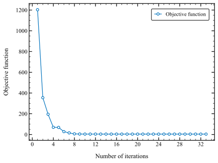
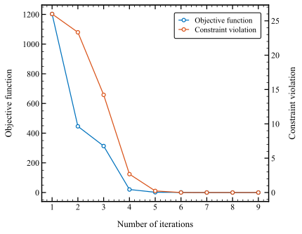

Tutorial: Optimization problems#
In this tutorial, we will explore how to utilize the OptimizationSolver and OptimizationProblem classes to solve optimization problems.
Example 1: Unconstrained optimization#
Problem definition#
The general Rosenbrock problem, also known as Rosenbrock’s banana function, in n dimensions is defined as:
Problem implementation#
In order to solve this problem with OptimizationSolver we have to define a problem class with the following methods:
fitness(x)get_bounds()get_nec()get_nic()
As the Rosenbrock problem is a very common test proplem, it is already implemented in the package.
The code snipped below shows the definition of the RosenbrockProblem class:
import numpy as np
from pysolver_view import OptimizationProblem, combine_objective_and_constraints
class RosenbrockProblem(OptimizationProblem):
def __init__(self, dim):
self.dim = dim
def fitness(self, x):
f = np.sum(100.0 * (x[1:] - x[:-1]**2)**2 + (x[:-1] - 1)**2)
return combine_objective_and_constraints(f, None, None)
def get_bounds(self):
return (-np.inf * np.ones(self.dim), np.inf * np.ones(self.dim))
def get_nec(self):
return 0
def get_nic(self):
return 0
Note that the definition of the RosenbrockProblem class is based on the abstract class OptimizationProblem.
The combine_objective_and_constraints helper packs the objective and constraints
into a single vector. The built-in psv.RosenbrockProblem also provides analytical
derivatives and finite bounds of \(-10 \le x_i \le 10\).
Problem solution#
Now that we understand how to implement optimization problems, let move to how to solve them using the OptimizationSolver class.
Import Necessary Packages
Let’s start by importing the packages we need:
import numpy as np import matplotlib.pyplot as plt
Importing PySolverView
Install the package as described in the installation guide, then import it:
import pysolver_view as psv
Setting Up Plot Options
Customize your plots with PySolverView’s built-in functionalities for high-quality figures:
psv.set_plot_options(grid=False)
Logger Initialization
For efficient debugging and analysis, initialize a logger for the optimization process:
logger = psv.create_logger("convergence_history", use_datetime=True)
Rosenbrock Problem Solution
Set your initial guess, define the problem, and solve:
x0 = np.asarray([2, 2, 2, 2]) # Rosenbrock's problem in 4 dimensions problem = psv.RosenbrockProblem(dim=len(x0)) solver = psv.OptimizationSolver( problem, method="slsqp", print_convergence=True, plot_convergence=True, logger=logger, ) sol = solver.solve(x0) plt.show() # This will keep the plot window open
The logger records convergence progress. The following output is retained from the original example; iteration counts and report formatting can differ by version:
--------------------------------------------------------------------------------
Starting optimization process for RosenbrockProblem
--------------------------------------------------------------------------------
Grad-eval Func-eval Func-value Infeasibility Norm of step
--------------------------------------------------------------------------------
1 1 +1.203e+03 +0.000e+00 +0.000e+00
2 5 +3.548e+02 +0.000e+00 +2.370e+00
3 9 +1.951e+02 +0.000e+00 +4.791e-01
4 12 +6.925e+01 +0.000e+00 +1.757e+00
5 15 +6.818e+01 +0.000e+00 +2.098e-01
6 18 +2.765e+01 +0.000e+00 +4.361e-01
7 19 +1.554e+01 +0.000e+00 +7.722e-01
8 20 +6.164e+00 +0.000e+00 +3.628e-01
9 21 +4.523e+00 +0.000e+00 +3.587e-02
10 22 +3.921e+00 +0.000e+00 +4.263e-02
11 23 +3.916e+00 +0.000e+00 +4.066e-03
12 24 +3.910e+00 +0.000e+00 +1.330e-02
13 25 +3.895e+00 +0.000e+00 +4.860e-02
14 26 +3.838e+00 +0.000e+00 +1.981e-01
15 28 +3.815e+00 +0.000e+00 +1.231e-01
16 29 +3.791e+00 +0.000e+00 +6.925e-02
17 30 +3.766e+00 +0.000e+00 +3.089e-02
18 31 +3.761e+00 +0.000e+00 +5.157e-02
19 32 +3.755e+00 +0.000e+00 +1.051e-02
20 33 +3.735e+00 +0.000e+00 +8.775e-02
21 34 +3.723e+00 +0.000e+00 +6.190e-02
22 35 +3.720e+00 +0.000e+00 +1.211e-01
23 36 +3.708e+00 +0.000e+00 +1.412e-02
24 37 +3.705e+00 +0.000e+00 +5.378e-02
25 38 +3.704e+00 +0.000e+00 +2.787e-02
26 39 +3.702e+00 +0.000e+00 +2.835e-02
27 40 +3.702e+00 +0.000e+00 +2.237e-02
28 41 +3.701e+00 +0.000e+00 +1.806e-02
29 42 +3.701e+00 +0.000e+00 +1.381e-02
30 43 +3.701e+00 +0.000e+00 +1.937e-03
31 44 +3.701e+00 +0.000e+00 +2.428e-04
32 45 +3.701e+00 +0.000e+00 +2.030e-05
33 46 +3.701e+00 +0.000e+00 +7.200e-05
--------------------------------------------------------------------------------
Exit message: Optimization terminated successfully
Sucess: True
Solution:
f = +3.701429e+00
x0 = -7.756551e-01
x1 = +6.130867e-01
x2 = +3.820567e-01
x3 = +1.459662e-01
--------------------------------------------------------------------------------
In addition, the script will also plot the optimization progress as illustrated in the figure below


Optimization Convergence History for the unconstrained Rosenbrock’s problem#
Congratulations! You’ve now successfully set up and solved the Rosenbrock problem using PySolverView. For more examples, see the optimization demos.
Example 2: Constrained optimization#
Problem definition#
In this example we will extend the Rosenbrock problem to include trigonometric-exponential constraints:
Problem implementation#
This problem is also implemented in the package, so we will only have to import it in our script.
The simplified class below illustrates the problem contract with the bounds above.
The built-in psv.RosenbrockProblemConstrained uses bounds of \(-10 \le x_i \le 10\)
and also provides derivatives:
import numpy as np
from pysolver_view import OptimizationProblem, combine_objective_and_constraints
class RosenbrockProblemConstrained(OptimizationProblem):
def __init__(self, dim):
self.dim = dim
def fitness(self, x):
f = np.sum(100.0 * (x[1:] - x[:-1]**2)**2 + (x[:-1] - 1)**2)
c_eq = []
for k in range(self.dim - 2):
value = (3 * x[k+1]**3 + 2 * x[k+2] - 5
+ np.sin(x[k+1] - x[k+2]) * np.sin(x[k+1] + x[k+2])
+ 4 * x[k+1] - x[k] * np.exp(x[k] - x[k+1]) - 3)
c_eq.append(value)
return combine_objective_and_constraints(f, c_eq, None)
def get_bounds(self):
return (-5 * np.ones(self.dim), 5 * np.ones(self.dim))
def get_nec(self):
return self.dim - 2
def get_nic(self):
return 0
Problem solution#
Let’s write a script to solve this problem with the OptimizationSolver class.
Import Necessary Packages
Start by importing the packages we need:
import numpy as np import matplotlib.pyplot as plt
Importing PySolverView
Install the package as described in the installation guide, then import it:
import pysolver_view as psv
Setting Up Plot Options
Customize your plots with PySolverView’s built-in functionalities for high-quality figures:
psv.set_plot_options(grid=False)
Logger Initialization
For efficient debugging and analysis, initialize a logger for the optimization process:
logger = psv.create_logger("convergence_history", use_datetime=True)
Rosenbrock Problem Solution
Set your initial guess, define the problem, and solve:
x0 = np.asarray([2, 2, 2, 2]) # Rosenbrock's problem in 4 dimensions problem = psv.RosenbrockProblemConstrained(dim=len(x0)) solver = psv.OptimizationSolver( problem, method="slsqp", print_convergence=True, plot_convergence=True, logger=logger, ) sol = solver.solve(x0) plt.show() # This will keep the plot window open
The following output is retained from the original example; iteration counts and report formatting can differ by version:
--------------------------------------------------------------------------------
Starting optimization process for RosenbrockProblemConstrained
--------------------------------------------------------------------------------
Grad-eval Func-eval Func-value Infeasibility Norm of step
--------------------------------------------------------------------------------
1 1 +1.203e+03 +2.600e+01 +0.000e+00
2 4 +4.460e+02 +2.333e+01 +8.617e-01
3 6 +3.132e+02 +1.422e+01 +1.319e+00
4 7 +2.043e+01 +2.677e+00 +2.781e+00
5 8 +1.638e+00 +2.323e-01 +2.564e-01
6 9 +9.424e-01 +3.911e-03 +1.130e-01
7 10 +1.105e-02 +2.097e-03 +7.363e-02
8 11 +6.271e-06 +3.231e-05 +8.599e-03
9 12 +1.503e-11 +3.540e-08 +2.092e-04
--------------------------------------------------------------------------------
Exit message: Optimization terminated successfully
Sucess: True
Solution:
f = +1.213596e-13
x0 = +1.000000e+00
x1 = +1.000000e+00
x2 = +1.000000e+00
x3 = +1.000000e+00
--------------------------------------------------------------------------------
In addition, the script will also plot the optimization progress as illustrated in the figure below


Optimization Convergence History for the constrained Rosenbrock’s problem#
Congratulations! You’ve now successfully set up and solved the constrained Rosenbrock problem using PySolverView. For more examples, see the optimization demos.